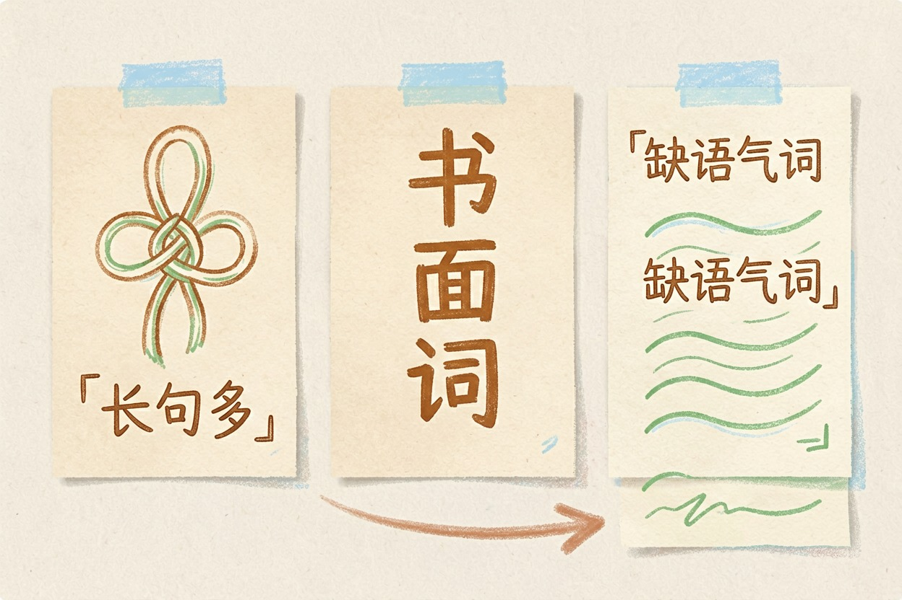
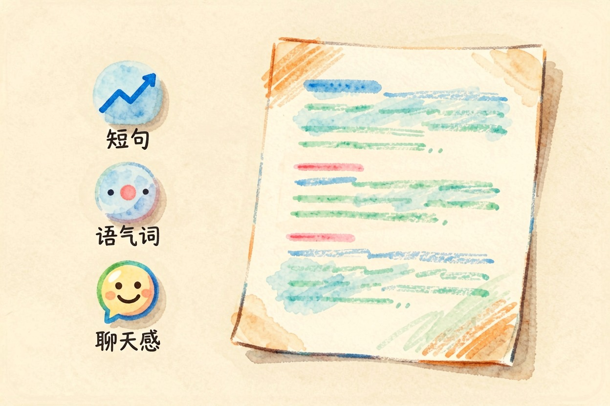
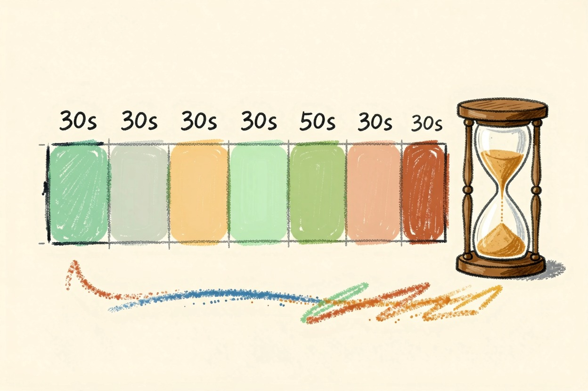
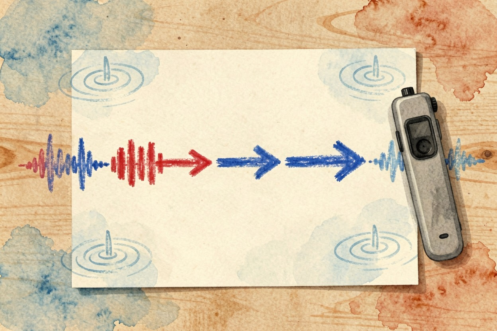

用 AI 写口播稿：能念出口的句子怎么写
口播稿念不出口，多半是 AI 写的句子太书面。三步走：先给口语模板，再分段生成，最后人工读一遍，改完就能顺口念完。
用 AI 写口播稿，最关键的是让 AI 说人话。AI 交上来的稿子，常见三个毛病：长句多、书面词多、缺语气词，念起来像读论文摘要。好的口播稿是讲出来的，不是写出来的。你要做的不是换更贵的 AI，而是换一套提示词。下面三步，把 AI 的稿子改成能说出口的句子。
关键要点 - AI 口播稿三大毛病：长句多、书面词多、缺语气词- 提示词模板必须指定口语化、短句、加语气词- 分段生成，每段 30 秒，避免长段落- 人工读一遍，改长句、加口语词、调节奏- 个人经历和情绪化表达，别交给 AI
AI 写口播稿为什么念不出口

你让 AI 写一段口播稿。AI 交作业了。你开口一念就卡。句子太长，一喘气十秒。词汇太文绉绉，「因此」「然而」「总而言之」一串接一串。缺语气词，真人说话会插「嗯」「啊」「那个」，AI 没有这些润滑剂。每段以句号收尾，别让 AI 用逗号拖到断气。根子在训练数据：网页和书都是书面材料，AI 学到的就是书面腔。用 AI 写口播稿，先立规矩：让它说人话。
第一步：给 AI 一个口语化模板

想让 AI 说人话，先给它一个「说话」的模板。下面这段提示词可以直接复制：
你是短视频口播文案专家。请帮我写一段口播稿，要求：
- 口语化：用短句，说人话，像朋友聊天。
- 加语气词：自然插入「嗯」「啊」「那个」。
- 分段：每段 30 秒，一段一个完整意思。
- 场景：在手机前分享一个生活技巧。
- 语气：亲切、自然、带点小幽默。关键就三条指令：口语化、短句、加语气词。AI 并非听不懂。只是没人告诉它要这么做。加了约束之后，输出基本能读顺。真正的打磨，还得靠后面两步。
第二步：分段生成，每段 30 秒

AI 一拿到主题就想写万字长文，你得主动打断。把 3 分钟视频拆成 6 段，每段 30 秒，一次只让它写一段。好处有两个：一段一个子话题，不跑题；段落短，句子自然短。分段时先把主题列成三到五个点，再逐个展开。某一段不满意，单独重写那一段就行，不用推翻整篇。
第三步：人工读一遍，改三处

AI 写完了。轮到你上场。大声读一遍，重点改三处。一，长句拆短句，超过 15 字的句子就切开；二，衔接处加「嗯」「然后」「那个」，节奏更自然；三，删修饰语，让主干突出。读的时候录个音，回放听哪里卡顿就改哪里。上周小李用这套方法改了一段稿子，改前念得磕绊，改后一口气录完。机器写稿，人工润色，这才是正确流程。想了解短视频剪辑侧的口播处理，可参考剪映官方帮助中心{:target="_blank"}。
什么情况下别用 AI 写口播
三种情况别让 AI 代笔：高度个人化的经历，比如童年、失恋、创业挫折，AI 只能编，编出来没灵魂；情绪化表达，AI 能模仿语气，模仿不了真情实感；现场即兴互动，AI 的稿子反而束缚临场发挥。记住：AI 是助手，不是主角。
别让 AI 包办全部口播稿，最后一句人话要你自己说。AI 写口播稿的本质是帮你完成八成起草，剩下两成「人味」自己加：给模板、分段生成、人工润色，三步下来，稿子就能从念不出口变成一口气录完。别舍不得删，念不顺的句子就换掉。想继续，看AI 视频生成工具哪个好和剪映 AI 怎么用，更多工具在AI 工具导航。
本文信息核对于 2026-08-06。AI 产品的价格、免费额度与功能变动频繁，实际以各工具官网当前说明为准。